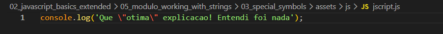
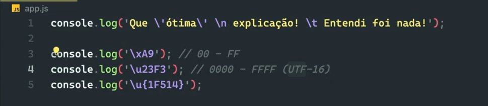
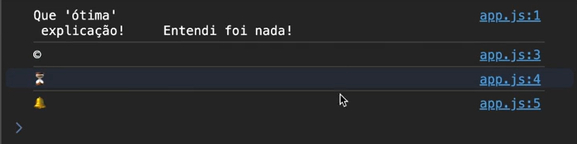

Special symbols
Intro
Aqui iremos ver um pouco sobre caracteres especiais e como podemos usa-los.
Aqui iremos ver um pouco sobre caracteres especiais e como podemos usa-los.
Um exemplo de poderia ser quando fazemos algo como uma ironia onde fazemos o uso de aspas'', porem isso pode dar certo conflito com nosso codigo, pois as as aspas '' sao usadas como strings. Exemplo: console.log('Que otima explicacao! Entendi foi nada'); fizemos uso de uma ironia no 'otima' mas nao podemos usar aspas. Assim que usarmos o aspas em 'otima' o JS ira entender que uma parte foi finalizado em nossa string.
Para podermos evitar esse tipo de situacao o JS nos permite utilizar algo camado de scape caractere, que e utilizar um simbolo (caractere) que basicamente ira fazer com que JS ignore a proxima aspas, para isso usamos a barra invertida \. Ficando da seguinte forma:

Na maioria das vezes que tivermos um caractere depois de nossa barra \ iremos ter algum comportamento diferente doque esperamos.

